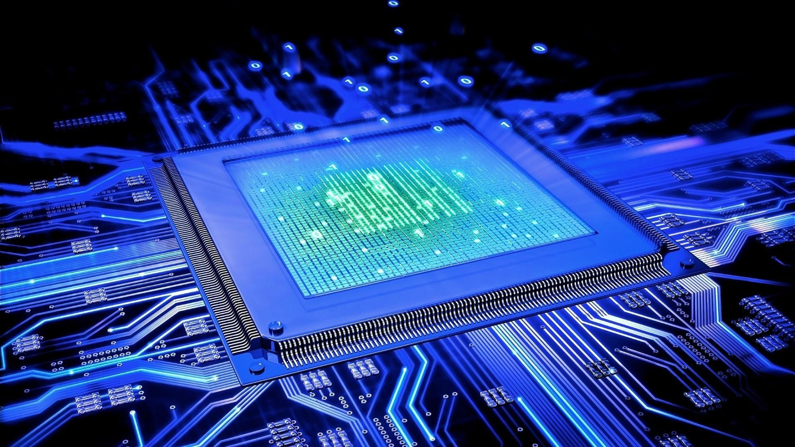
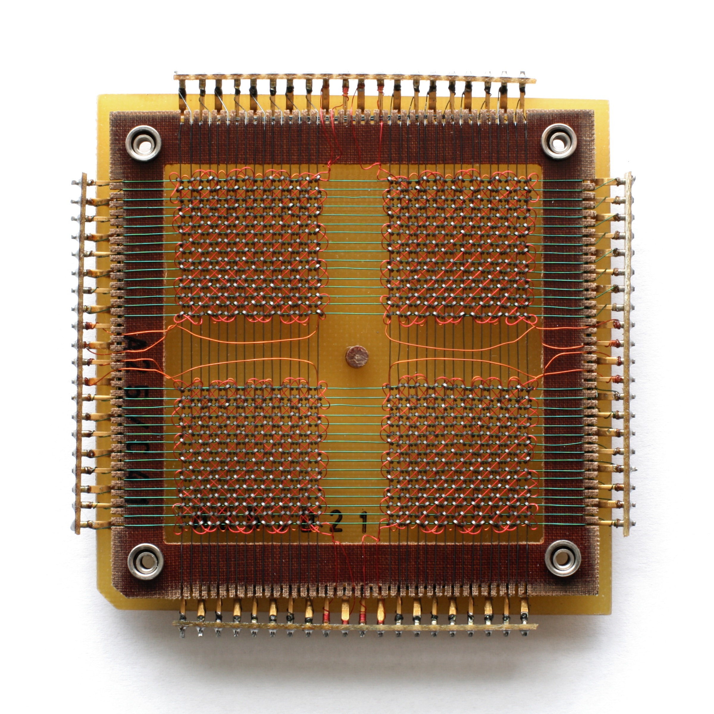

Input Device
An Input device is a electronic mechanism that provides data and siganls to a processing unit. Input devices can provide signals such as mechanical or audio siganls. Examples of an input device are products such as a keyboard and a mouse. Input devices are extremely inportant because they are the units that tell the computer what to do.
TOC
Output Device
An Output device is a electronic mechanism that shows the result of a signal after it is processed by a CPU.. After the computer process signals and codes from Input devices, it gives out signals to Output devices. The Output devices then turn the signal into physical, or other motions. Examples of Output devices are monitors and speakers. If we do not have Output devices such as monitors then we would not be able to see a Youtube video playing after we click the play button.
TOC
 Central Processing Unit(CPU)
Central Processing Unit(CPU)
Central Processing Unit is alos known as CPU. CPU is a circuit that processes instructions. It provides basic controlling, logic and Input/Output operations from a specific program. CPU is essential because when a signal enters a computer, the signal needs a unit to prosses the data. A computer would not be able to open if there was no CPU.
TOC
Arthmetic Logic Unit(ALU)
ALU is a combinational digital circuit that performs operations on integer binary numbers. They are a part of CPU and graphics processing units(GPU). ALUs are very important because they are the building blocks and operation units of a CPUand GPU. ALU uses codes such as "Add" and "Subtract" to process data and complete operations. In a computer, a lot of ALU work together to solve a problem or follow a command together.
TOC
Control Unit
The Control Unit is a part of the CPU. It tells the computer memory, arithmetic logic unit and input and output devices how to respond to a specific instruction that has been sent to the CPU. It controls operations by providing timing and control signals.
TOC
Random Acess Memory
Random Acess Memory is also known as RAM which is a short term memory. It remembers progress that a person is currently working on, but if the computer is turned off then the progress will be lost unless saved to a long term memory. RAM also requires a lot of power, for example, if the computer is plugged into a power source but then unpluged, then the RAM memory might be lost.TOC
Optical Memory
Optical Memory is any storage method that uses a laser to store and retrieve data from optical media. It reads digital binary data. For example, the old technology floppy disks useed laser to read the special dots stored on the disks. Modern technologies do not use Optical memories anymore.TOC
Magnetic Memory
Magnetic Memory is also known as core memory. This type of memeory uses rings of a hard magnetic material as tranformer for codes. Magnetic hysteresis allows each of the cores to remember a code, which is a burst of electrons. Each core stores one "bit" of information and can be magnetized in either clockwise or counter-clockwise direction. Each direction stands for 1s or 0s.TOC
Flash Memory
 Flash memory is an electronic non-volatile computer memory that is reprogramable. It is similar to a long term memory, but it can be electronically erased. The Flash Memory useslogic gates and circuits.Flash Memory is a type of floating-gate memory that was invented by Toshiba in 1980.TOC
Flash memory is an electronic non-volatile computer memory that is reprogramable. It is similar to a long term memory, but it can be electronically erased. The Flash Memory useslogic gates and circuits.Flash Memory is a type of floating-gate memory that was invented by Toshiba in 1980.TOC
Logic Gates
 Logic Gates is a physical electronic device that uses a type of logic called Boolean logic to produce a single binary Output. It is very versatile because all of the mathmatics that can described by Boolean logic is used to construct multiple functions. A common logic gate uses "And" and "Or". Logic gates make circuit design simpler and more efficient.TOC
Logic Gates is a physical electronic device that uses a type of logic called Boolean logic to produce a single binary Output. It is very versatile because all of the mathmatics that can described by Boolean logic is used to construct multiple functions. A common logic gate uses "And" and "Or". Logic gates make circuit design simpler and more efficient.TOC